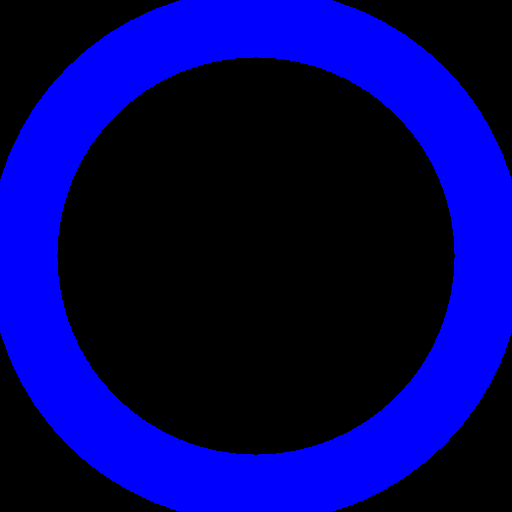

Step 0: Straighten Head
You will observed a black sky through a blue halo.

Look straight ahead with your head aligned with your body axis.
When you are comfortable with your head straight on your shoulders, press the Select Button to start the trial.